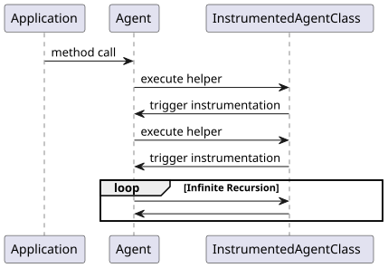
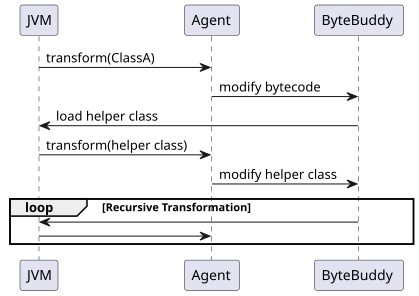
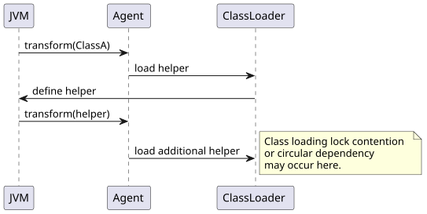
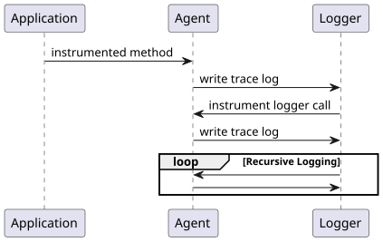

Navigation
../index | modules: parent | agent | collection | counter | example | interfaces | metrics-cost | metrics-cost-unnamed | test | thoughts on: JPMS | uninstrumentable | test tools | Metric Handoff
Overview
A Java agent that aims for maximum observability should instrument as much application and framework code as possible while excluding a small set of critical classes and packages that can jeopardize JVM stability, cause recursive instrumentation, or introduce excessive overhead.
The objective is not to minimize instrumentation, but rather to apply a carefully designed exclusion strategy that preserves:
-
JVM stability
-
Agent reliability
-
Class loading safety
-
Predictable performance
-
Maximum visibility into application behavior
Why Exclusions Are Necessary
Blindly instrumenting every loaded class frequently leads to several categories of problems:
| Category | Risk |
|---|---|
Agent Classes |
Self-instrumentation and infinite recursion |
Bytecode Manipulation Libraries |
Instrumentation of the instrumentation framework itself |
Class Loading Infrastructure |
Class loading deadlocks and circular dependencies |
JVM Internal Classes |
Version-specific behavior and JVM instability |
Reflection Infrastructure |
Very high invocation frequency and overhead |
Logging Frameworks |
Recursive logging loops |
Generated Proxies |
Large volume of low-value telemetry |
Common Failure Modes
Self-Instrumentation
When an agent instruments its own implementation classes, every internal agent operation may trigger additional instrumentation.
This can create an infinite recursive loop.

For this reason, agent packages should always be excluded.
com.mycompany.agent.*
io.opentelemetry.javaagent.*
com.newrelic.*
datadog.*Instrumentation Framework Exclusions
Instrumentation frameworks should never instrument themselves.
Byte Buddy
net.bytebuddy.*ASM
org.objectweb.asm.*Javassist
javassist.*Without these exclusions, class transformations may recursively trigger additional transformations.

Class Loading Exclusions
Class loading is one of the most sensitive areas of the JVM.
Instrumenting class loader infrastructure can lead to:
-
ClassCircularityError
-
LinkageError
-
Deadlocks
-
Bootstrap failures
Recommended exclusions:
java.lang.ClassLoader
java.security.SecureClassLoader
jdk.internal.loader.*Potential Class Loading Deadlock

JVM Internal Classes
JVM internal classes are implementation details and may vary across Java versions.
Recommended exclusions:
sun.*
jdk.internal.*Reasons:
-
Not part of the public Java API
-
Frequently changed between JDK releases
-
Increased compatibility risks
Reflection Infrastructure
Reflection is often extremely hot in enterprise applications.
Recommended exclusions:
java.lang.reflect.*
sun.reflect.*Reasons:
-
Very high call frequency
-
Potentially significant instrumentation overhead
-
Usually limited business value
Logging Frameworks
Logging instrumentation requires special consideration.
Common logging frameworks:
org.slf4j.*
ch.qos.logback.*
org.apache.logging.*Logging Recursion Example
If instrumentation emits logs and logging itself is instrumented, recursion may occur.

For APM and tracing agents, excluding logging frameworks is often recommended.
For security monitoring agents, logging instrumentation may still be desirable.
Generated and Proxy Classes
Generated classes frequently contribute large telemetry volumes while providing limited insight.
Examples:
*$Proxy*
*$$Lambda$*
*$$EnhancerBySpringCGLIB*
*$$FastClassBySpringCGLIB*Whether to exclude them depends on the use case.
| Use Case | Recommendation |
|---|---|
APM |
Usually exclude |
Performance Analysis |
Usually exclude |
Security Monitoring |
Often instrument |
Runtime Behavior Analysis |
Often instrument |
Comparison of Existing Java Agents
OpenTelemetry Java Agent
Characteristics:
-
Broad framework coverage
-
Excludes agent implementation
-
Excludes Byte Buddy and ASM
-
Excludes JVM internals
Typical exclusions:
io.opentelemetry.javaagent.*
net.bytebuddy.*
org.objectweb.asm.*
sun.*
jdk.internal.*Datadog Java Agent
Characteristics:
-
Aggressive framework support
-
Extensive compatibility checks
-
Strong exclusion controls
Typical exclusions:
datadog.*
net.bytebuddy.*
sun.*
com.sun.*
jdk.*New Relic
Characteristics:
-
More conservative instrumentation model
-
Focus on supported frameworks
Typical exclusions:
com.newrelic.*
java.*
javax.management.*
sun.*AppDynamics
Characteristics:
-
Similar approach to New Relic
-
Conservative JDK instrumentation
Typical exclusions:
com.appdynamics.*
java.*
sun.*
jdk.*Glowroot
Characteristics:
-
Broad application visibility
-
Conservative JVM instrumentation
Typical exclusions:
org.glowroot.*
java.*
sun.*Maximum Coverage Strategy
Many traditional agents use a broad exclusion strategy:
exclude:
java.*
javax.*
jdk.*
sun.*This significantly reduces risk but also removes visibility into important JDK operations such as:
-
HTTP clients
-
File system access
-
Socket communication
-
Concurrency primitives
-
CompletableFuture execution
-
NIO operations
Examples:
HttpClient.send(...)
Files.readAllBytes(...)
Socket.connect(...)
CompletableFuture.thenApply(...)Recommended Modern Strategy
Instead of excluding entire JDK namespaces, only exclude critical infrastructure classes.
Exclude
<agent-package>.*
net.bytebuddy.*
org.objectweb.asm.*
javassist.*
sun.*
jdk.internal.*
java.lang.instrument.*
java.lang.ClassLoader
java.security.SecureClassLoader
java.lang.Class
java.lang.invoke.*Instrument
java.lang.*
java.util.*
java.time.*
java.net.*
java.nio.*
javax.*
jakarta.*
application packages
framework packages
third-party librariesRecommended Exclusion Baseline
# Agent implementation
com.mycompany.agent.*
# Instrumentation frameworks
net.bytebuddy.*
org.objectweb.asm.*
javassist.*
# JVM internals
sun.*
jdk.internal.*
# Instrumentation API
java.lang.instrument.*
# Class loading
java.lang.ClassLoader
java.security.SecureClassLoader
# Dynamic invocation infrastructure
java.lang.invoke.*
# Reflection (optional)
java.lang.reflect.*
# Logging (optional)
org.slf4j.*
ch.qos.logback.*
org.apache.logging.*Conclusion
A modern Java agent should follow an "Allow Most, Block Critical" strategy.
Rather than excluding entire JDK namespaces, the agent should exclude only:
-
Agent implementation packages
-
Bytecode manipulation frameworks
-
JVM internals
-
Class loading infrastructure
-
Dynamic invocation infrastructure
-
Optional high-frequency subsystems such as logging and reflection
This approach typically achieves approximately 90–95% of the maximum observable execution surface while maintaining JVM stability and avoiding recursive instrumentation failures.